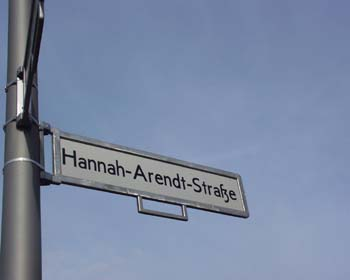

Pisci. Tri čuda

Ovo je mali lični izbor delova priča o tri pisca na koje sam naišla ovih dana.
Ulica Hana Arent je u centru Berlina, u blizini novog spomenika jevrejskim žrtvama.
U vreme nacizma je emigrirala više puta, u različite zemlje, bila izložena različitim opasnostima i izazovima. Nešto o tome ovde i ovde. Kasnije se bavila naukom i neka od njenih dela su postala kapitalna u oblasti društvenih nauka i filozofije.
Uprkos svemu, u ranim godinama imala je buran ljubavni život sa istaknutim muškarcima, od kojih su neki, što se kaže, bili kontroverzni (evo deo sa Wikipedie):
She studied philosophy with Martin Heidegger at the University of Marburg, and had a long, sporadic romantic relationship with him, something that has been criticised because of his later membership in and support for the Nazi party.
During one of their breakups, Arendt moved to Heidelberg to write a dissertation on the concept of love in the thought of Saint Augustine, under the direction of the existentialist philosopher-psychologist Karl Jaspers.
She married Günther Anders in 1929 in Berlin (they divorced in 1937).
* * *
Margaret Mičel mi je zanimljiva pod broj jedan po tome što je rođena istog datuma kad i ja.
A drugo, ona je žena uzela i napisala jednu knjigu, "Prohujalo sa vihorom" i to je to, završila posao. Knjiga je, posle Biblije, najprodavanija knjiga svih vremena i još uvek se prodaje po dvesta hiljada primeraka godišenje. Respect.
* * *
Današnja priča broj tri vezana je za Milana Kunderu.
Vest iz današnjeg Danasa je da se "Nepodnošljiva lakoća postojanja" najzad pojavilo na češkom u Češkoj i postala bestseler. Posle 20 godina od objavljivanja. Do sada se tamo prodavala samo na engleskom. A samo od Plišane revolucije prošlo je već 17 godina.
Meni je to prosto neverovatno.
Inače mi je super kad se setim dana otkrivanja Kundere. Pročitaš jedan roman, onda i sve ostale koje nađeš, svaki prija na svoj način. Nekad me baš nervira što se nije desilo da ih npr. sad tek čitam prvi put. Ok, ima ova 2-3 nova, ali to nisam čitala, a nešto ni nemam želju.
Komentari
 Ljube | 13.11.06 21:11
Ljube | 13.11.06 21:11
Pa dobro, ne bih ni ja sad citala Prohujalo sa vihorom da nisam, ali u srednjos skoli, druga prica
La Lara | 14.11.06 10:10
La Lara | 14.11.06 13:37
 ubipacijentic | 14.11.06 16:08
ubipacijentic | 14.11.06 16:08
ubipacijentic | 14.11.06 16:10
 Mandara | 15.11.06 11:00
Mandara | 15.11.06 11:00
Evo i BBC verzije vesti: http://news.bbc.co.uk/2/hi/europe/6146494.stm
@Ubi, ne znam sto pitas kako izgleda iz zenske perspektive? Mislim, sto, jel' ima nesto specificno? Ja se ne secam da je bio neki problem ili nesto
La Lara | 15.11.06 11:31
ubipacijentic | 15.11.06 20:54
 RSS feed
RSS feed
 sadržaji se objavljuju pod
sadržaji se objavljuju pod
Da to s Kunderom poznato-jedna, dve...i nema kraja, ali mi prosto neverovatno ovo za Cesku.
Evo od tebe saznah ko je pisao prohujalo s vihorom. Tnx. Nisam citala, niti cu, ali kao sto ti rece, Recpect.
etotako | 13.11.06 18:56